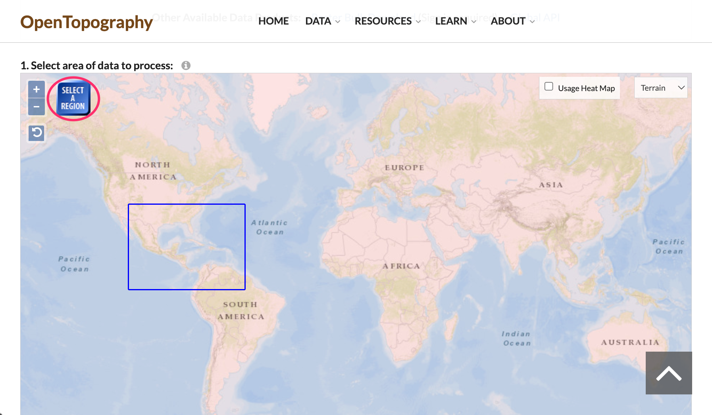
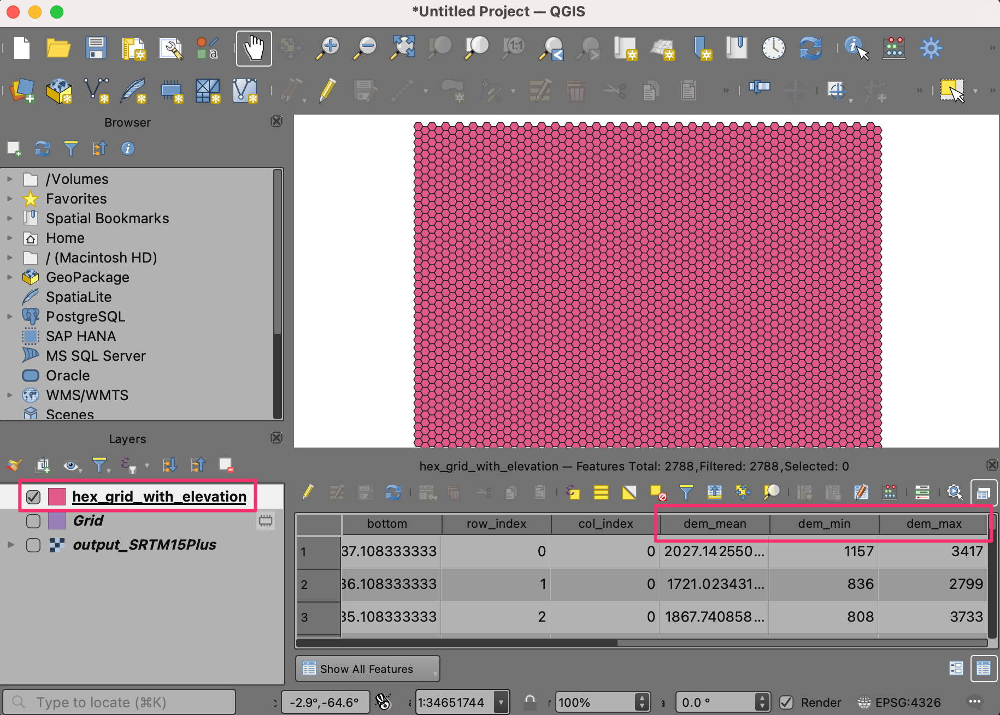
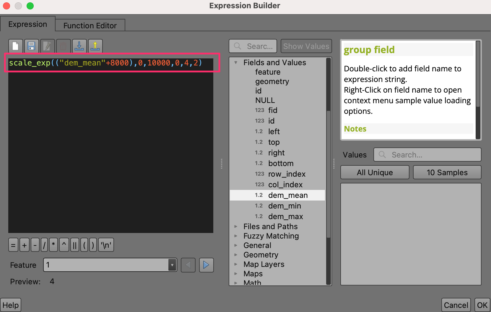
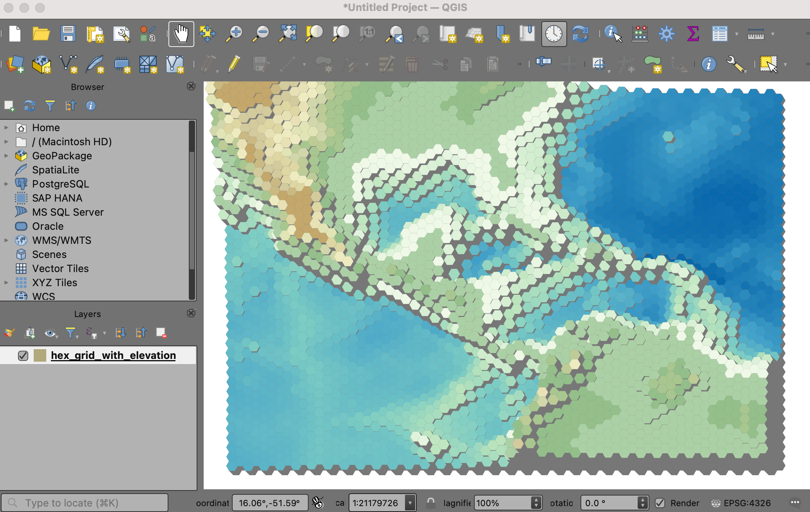

Een geblokte kaart van de wereld maken (QGIS3)¶
Bijgedragen door: Steven Kim
In de vorige handleiding Basis filteren en opmaken met expressies (QGIS3) hebben we gezien hoe eenvoudig expressies kunnen worden gebruikt om gegevens in QGIS te filteren en op te maken. We borduren hierop voort door een geblokte wereld te maken uit een hexagonaal raster met waarden voor hoogte.
Overzicht van de taak¶
We zullen een hexagonaal raster nemen dat waarden voor hoogte bevat en een wiskundige functie gebruiken om een variabele voor de hoogte in te stellen voor de 2.5D-renderer en een voorwaardelijk argument om een kleurverloop toe te passen.

Andere vaardigheden die u zult leren¶
Ontdekken en downloaden van gegevenssets met hoogten.
Maken van een hexagonale raster en uitnemen van statistieken voor het raster uit elke rastercel.
Toevoegen van een nieuw kleurverloop aan QGIS
De gegevens ophalen¶
OpenTopography verschaft toegang tot vele open gelicenseerde gegevenssets met hoogten. We zullen een DEM voor uw gebied van interesse uitnemen en downloaden uit een globale DEM en gegevensset Ocean Bathymetry, gehost op OpenTopography.
Bezoek de gegevenspagina Global Bathymetry and Topography at 15 Arc Sec: SRTM15+ V2.5.5 op de website OpenTopography. Dit is een 500m resolutie globale gegevensset, afgeleid van SRTM DEM en verscheidene gegevenssets van oceaan bathymetrie.

Scroll naar beneden naar het gedeelte 1. Select area of data to process. Klik op de knop SELECT A REGION en teken een rechthoek die uw gebied van interesse bedekt.

Als het gebied eenmaal is ingesteld, scroll naar beneden naar het gedeelte 2. Data Outputs Formats en selecteer
GeoTiff. Laat alle andere opties op hun standaard staan en scroll naar beneden naar het gedeelte Job Description. Voer uw e-mailadres in om te worden genotificeerd als de download gereed is. Klik op de knop SUBMIT.

De download kan een aantal minuten duren voordat die verwerkt is. Eenmaal gereed zult u een link ontvangen om de geselecteerde subset te downloaden. Download het bestand naar uw computer. Het gedownloade bestand is een tar gecomprimeerd bestand, dat moet worden uitgepakt om te kunnen worden geopend in QGIS. Op Windows zou u een extern programma kunnen gebruiken, zoals 7-Zip, om het bestand
output_SRTM15Plus.tifuit te pakken en uit te nemen.

In QGIS, lokaliseer het bestand
output_SRTM15Plus.tifin de Browser. Sleep het en zet het neer in het QGIS kaartvenster. Als een nieuwe laag zaloutput_SRTM15Plusworden toegevoegd aan het paneel Lagen.

Open de Toolbox van Processing via . Zoek en lokaliseer het algoritme . Dubbelklik erop om het te openen.

In het dialoogvenster Grid maken, kies
Hexagoonals het Type grid. We zullen een raster maken dat de gehele DEM bedekt. Klik dus, voor het Grid-bereik, op het pijltje voor de keuze en selecteer .

Ons geselecteerd gebied is behoorlijk groot, dus kunnen we een raster van 1 graad maken. Selecteer
1voor zowel Horizontale afstand als Verticale afstand. Als u met een kleiner gebied werkt, zou u een kleinere afstand voor het raster kunnen kiezen. Laat de andere opties op hun standaardwaarden en klik op de knop Uitvoeren om het raster te maken.

Een nieuwe laag
Rasterzal worden toegevoegd aan het paneel Lagen. We zullen nu de minimum, maximum en gemiddelde waarden voor hoogten uitnemen uit elk polygoon van het raster. Selecteer de laagRasteren lokaliseer het algoritme uit de Toolbox van Processing. Dubbelklik erop om het te openen.

Selecteer
Rasterals de Invoerlaag enoutput_SRTM15Plusals de Rasterlaag. Voerdem_in als het Voorvoegsel uitvoerkolom. Vervolgens willen we configureren welke statistieken we uit het raster willen uitnemen. Klik op de knop … naast Statistieken om te berekenen.

Selecteer de opties voor de waarden
Gemiddelde,MaximumenMinimumen klik op OK. We zullen de resultaten opslaan naar een bestand. Klik op de knop … naast Gebiedsstatistieken en selecteer Opslaan als bestand….

Blader naar een map op uw computer en voer de bestandsnaam in als
hex_grid_with_elevation. Zorg ervoor dat het type bestand is geselecteerd als GPKG-bestanden (*.gpkg). Klik op Opslaan. Als het dialoogvenster Gebiedsstatistieken is geconfigureerd, klik dan op Uitvoeren.

Het verwerken kan enige minuten duren, afhankelijk van de grootte van uw raster. Als de berekeningen eenmaal zijn voltooid, zal een nieuwe laag
hex_grid_with_elevationworden toegevoegd aan het paneel Lagen. Dit is een vectorlaag met de attributendem_mean,dem_minendem_max, die de statistieken voor de hoogten bevatten die zijn uitgenomen uit de DEM.

Voor het gemak kunt u direct een kopie van het voorbereide raster downloaden vanaf hieronder:
Gegevensbron [OPENTOPOGRAPHY]
Procedure¶
Zoek in de QGIS Browser naar het bestand
hex_grid_with_elevation.gpkgen vergroot het. Selecteer de laaghex_grid_with_elevation.gpkgen sleep het naar het kaartvenster.

Een nieuwe laag
hex_grid_with_elevationzal nu worden geladen in QGIS en u zou een hexagonaal raster moeten zien.

Voordat we doorgaan moeten we eerst een kleurverloop toevoegen dat geschikt is voor het inkleuren van DEM’s. Klik op Extra op de menubalk en selecteer Stijlmanager.

Klik op het plusteken Item toevoegen aan de onderzijde en selecteer .

Scroll naar beneden door de kleurverlopen totdat u wiki-1.02 vindt. Er zouden er meerdere kunnen zijn met dezelfde naam, kies er gewoon een en klik op OK.

At the Save New Color Ramp window, enter the value
wiki-1.02as the Name.

Klik op Opslaan om het venster te verlaten en klik dan op Sluiten om de Stijlmanager te verlaten. Nu is het kleurverloop wiki-1.02 beschikbaar om in uw projecten te gebruiken en kunnen we doorgaan.

Klik op Paneel Laag opmaken openen en schakel van Enkel symbool naar 2.5 D. Klik op de knop ε, naast Hoogte:

Voer, in de Expressiebouwer, de volgende expressie in. Deze expressie gebruikt de functie
scale_exp()om het bereik van de waarden voor het attribuutdem_meante wijzigen van 0-10000 naar 0-4 en om een exponent van 2 te gebruiken. Het exponentieel op schaal brengen ziet er netjes uit in de geblokte wereld. De+8000is ervoor om de bodem van de oceaan gelijk aan nul te maken.
scale_exp(("dem_mean"+8000),0,10000,0,4,2)
Wijzig de Hoek naar
135.

We zullen onze eigen kleuren toepassen op het raster. Schakel uit Muren voorzien van schaduw, gebaseerd op aspect en Schaduw.

U zou de topografie van het gebied vorm moeten zien krijgen. Klik op Paneel Laag opmaken openen en schakel van 2.5D terug naar Enkel symbool.

In het venster Symbool, merk op dat er twee Geometrie-generatoren zijn, elk met een laagtype Standaard vulling. De eerste Standaard vulling is het bovenste vlak van elk blok, terwijl de tweede Standaard vulling is de zijkant is.

Klik op de eerste Standaard vulling om de kleur van het bovenste vlak te wijzigen. Klik op de knop Data-bepaalde ‘override’ voor de Vulkleur en selecteer Bewerken… in het menu.

Dat brengt het dialoogvenster Expressiebouwer voor de Vulkleur naar voren. Voer de volgende expressie in. Deze expressie heeft een voorwaardelijk argument
CASEom de kleuren van wiki-1.02 te gebruiken als de waarde van het attribuutdem_meangroter is dan of gelijk aan nul en groen-blauwe kleuren alsdem_meankleiner is dan nul.
CASE WHEN "dem_mean" >= 0 THEN ramp_color('wiki-1.02',scale_linear("dem_min",0,1500,0.4,1)) ELSE ramp_color('GnBu',scale_linear("dem_mean",-6000,0,1,0)) END
Het hexagonale raster is nu gerenderd in kleuren die worden bepaald door onze expressie. Klik op de knop Data-bepaalde ‘override’ voor de Vulkleur en selecteer Kopiëren in het menu.

Klik op de knop Data-bepaalde ‘override’ voor de Lijnkleur en selecteer Plakken in het menu.

U zou moeten zien dat de kleuren zich aanpassen en onze kaart is voltooid. Experimenteer vooral met de expressies in deze handleiding, zoals het wijzigen van parameters in de functies voor de hoogte of toevoegen van of proberen van nieuwe kleurverlopen.

If you want to give feedback or share your experience with this tutorial, please comment below. (requires GitHub account)